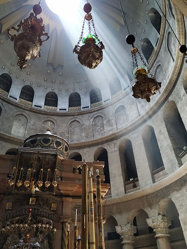

We planned to spend only one day in Jerusalem, went there by bus early in the morning and returned to Tel-Aviv on the evening bus. Because of hot weather I was wearing a short pair of shorts and had a cape in my backpack for covering legs during visiting churches and The Western Wall.
I knew that Jerusalem isn't as tolerant city as Tel-Aviv, but I couldn't even imagine that all local people and tourists would wear long covered clothes. Actually, in Jerusalem I saw only two persons wearing a pair of shorts, one of them was I. Exept my stupidity I had a second problem durin that trip - the weather was quite cold, so I felt uncomfortable and freezing.
We walked in to the Old City through Jaffa Gate, but soon turned up on market, that was under all sightseen places. Market looked like an endless labyrinth. I think that market's sellers made some money on helping tourists to get out of market because to find a way to surface was difficult. The good thing - there possible to buy a wide range of souvenirs.
Old's city architecture always impressed me more, than all stories that guides told to tourists. How they could build such massive and beauteful buildings without engineering knowledge and modern equipment. I'm ready to sit for hourse and examine each old stone. However, huge groups of tourists didn't let us to relax.

We decided to buy some gifts and had a meal out of Old city. Of course I have to post a picture of The Western Wall.
We examine Jerusalem just wandering towards to the bus station, having a rest on street benches and caffe. There were a lot of flowers on streets, modern public transport that we used to get to the city center from the bus station. Often we met young people who were serving in the Army, so they were walking with submachine guns. Atmosphere in Jerusalem was calm and friendly, it looked like streets were plenty of locals, not tourists.
In Jerusalem magically connected modern amenities, old medieval architecture and angular buildings that looked like big rectangular boxes. It's interesting how this city loked like after sunset, unfortunately we didn't have time to see it.
Summaries:
1 – It takes about one hour to get to Jerusalem from Tel-Aviv by bus.
2 – The bus station located not far away from Old city. There is a train from the station to Old city.
3 – Clothes should cover legs and shoulders.